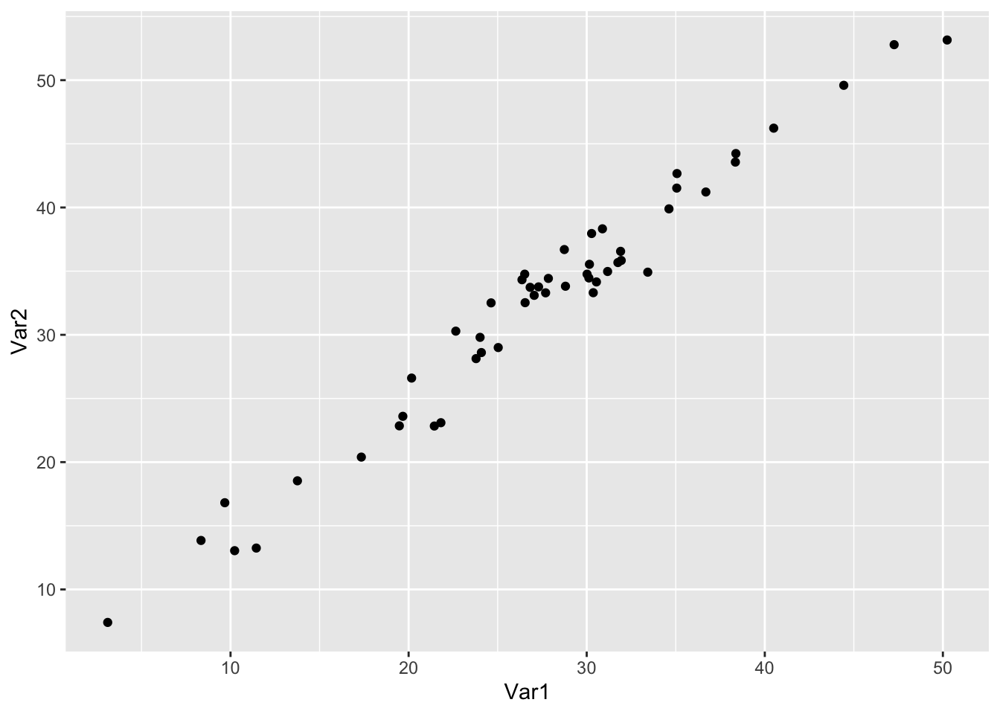
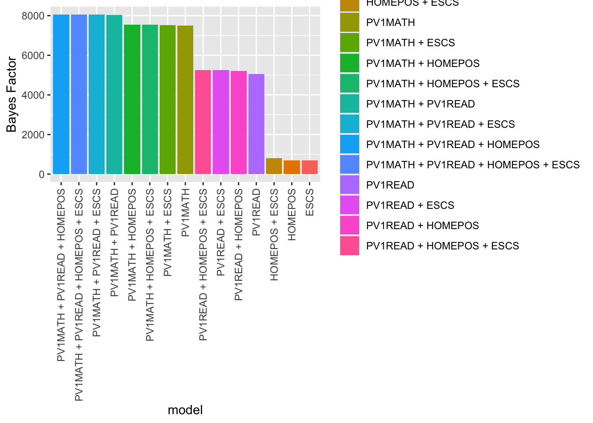

The statistical methods you have encountered to this point, the t-tests, chi-squared tests and linear models, are examples of an approach to statistics labelled frequentist statistics. Typically these methods report p-values which indicate the probability, assuming that the null hypothesis is true, of obtaining similar or more extreme results. Frequentist methods calculate the probability of the occurrence of events based on the outcome of many trials.
However, frequentist statistics, because of the way the outcomes of tests are presented, can be hard to interpret. Consider the case of two sets of exam results, for class A and B, which are taught by different methods. We wish to determine if there is a statistically significant difference in means, to see if one approach to teaching is better than the other, so we perform a frequentist t-test.
Welch Two Sample t-test
data: ClassA and ClassB
t = -4.6276, df = 19.013, p-value = 0.0001833
alternative hypothesis: true difference in means is not equal to 0
95 percent confidence interval:
-42.67437 -16.09486
sample estimates:
mean of x mean of y
50.84615 80.23077
In this case, the p-value of the frequentist t-test is 0.0002, less than 0.05. We conclude that, if we assume the null hypothesis (that the means of the classes are the same), there is a probability of 0.0002 (1 in 5000) than results like this, or more extreme, could have arisen by chance.
The p-value here can be thought of as indicating the probability of a false positive. That is, it reports the probability that a difference in means of this size or larger could have arise by chance. Alternatively, the p-value is sometimes described as a measure of how surprised one ought to be by the results - if we assume the classes should get the same results, the p-value of 0.0002 suggests we ought to be considerably surprised (shocked!) to get results as different as this (50 in one class, 80 in the other) by chance.
The trouble with the frequentist p-value is that is doesn’t tell us what we typically want to know - what is the probability that the scores in the condition group are different from the control (and hence there is a difference in the teaching approaches). The Frequentist approach reports, after a number of trials, the limit of the relative frequency of an event. For example, after 13 students in each class have sat the test, and assuming that the two classes have the same mean score, there is a 1 in 5000 chance that the results like this, or more extreme, would occur. This is not an intuitive approach to reporting probability - the Bayesian approach offers an alternative.
0.2 The Bayesian Approach to Statistics
The Bayesian approach was developed by the English statistician and Presbyterian minister, Thomas Bayes. The Bayesian approach proposes a different model to expressing the outcome of statistical tests. Bayesian statistics report a probability expressing a degree of belief an event. Central to Bayesian statistics is the assumption that the degree of belief should be revised based on prior knowledge. This contrasts with frequentist statistics in which the null hypothesis is assumed, even though it is rare to genuinely believe in the null hypothesis - there are rarely no differences between groups (Murphy 1990). In Bayesian statistics, analysis is carried out in light of prior knowledge of probabilities of relevant events. In the case of the classes above, for example, information about prior achievement, and hence the likelihood of the two classes having the same mean score could be used in the calculation.
“’The key ideas of Bayesian statistics: that probability is orderly opinion, and that inference from data is nothing other than the revision of such opinion in the light of relevant new information” (Edwards, Lindman, and Savage 1963, 194)
Bayes’ theorem can be stated mathematically as:\(P(A\vert B)=\frac{P(B \vert A)P(A)}{P(B)}, \text{ if } P(B) \neq 0\)
A and B represent two events. \(P(A)\) represents the probability of A occurring and \(P(A)\) the probability of B happening. The formula assumes that \(P(B)\ne0\), that is there is some probability the event B will happen.
\(P(A\vert B)\) is a conditional probability - that is, the probability that A will occur given that B has occurred.
\(P(B\vert A)\) is another conditional probability - this time, the probability that B will occur given that A has occurred.
We can see how the formula works in an example:
Imagine that the prevalence of students who have profound and multiple learning difficulties (PMLD) in state secondary schools in the UK is 1%. We might also know that the screening process for PMLD gives a false positive (i.e. incorrectly categorises a student with no learning difficulties with PMLD) 5% of the time.
A student receives a diagnosis of PMLD - what is the probability that they have PMLD?
We can use the formula to find the probability that the student has PMLD, given that they have a positive test \(P(HasPMLD\vert PositiveTest)\). But let us first consider the calculation intuitively.
If we select 1000 people at random for PMLD testing, 10 will have PMLD. 990 students will not have PMLD. Of those 990 people, 5% will receive a positive screening. 5% of 990 is 49.5 people. So there are 10 (correct screenings) + 49.5 (false positives) = 59.5 people who test positive. The probability that someone has PMLD, given a positive test is \(P(HasPMLD\vert PositiveTest)\) is \(10/59.5=0.17\) surprisingly low.
The example indicates the value of taking prior information into account when making inferences. Intuitively, it might be expected that, with the low rate of false positives (5%) a positive test would mean a high certainty of diagnosis. However, combined with knowledge of the prevalence of PMLD in the population, the probability of having PSMLD after a positive test is only around 1 in 5.
There are Bayesian versions of the inferential tests we have covered so far (t-tests, chi-squared, correlationa dn linear regression).
0.2.1 The Bayesian t-test
The BayesFactor package can be used to perform a Bayesian version of the t-test. Let us perform the Bayesian test on the same class data we used above, for which we found a p-value of 0.0002.
library(BayesFactor)# Create two dummy class exam scores, as dataframes this time, as that is what the Bayesian t-test takes as an inputClassA <-data.frame(Scores =c(54,53,72,31,25,34,87,45,26,42,54,58,80))ClassB <-data.frame(Scores =c(82,94,88,76,82,60,88,90,75,77,96,61,74))# Label the classes A and BClassA <- ClassA %>%mutate(Class="A")ClassB <- ClassB %>%mutate(Class="B")# Combine into one data frameTotaldata <-rbind(ClassA, ClassB)# Perform the Bayesian testttestBF(data = Totaldata, formula = Scores ~ Class)
The value of interest here is the Bayes factor, 194.1877, followed by the confidence interval ±0%. The Bayes factor can be thought of as a measure of the relative likelihood of a difference (in this case, a different in scores between the groups). Here the factor can be interpreted to mean: It is 194 times more likely that there is a difference between the two classes than there is no difference.
By comparison with a p-value, which acts only as a cut of for significance, the Bayes factor tells you the relative likelihood, a more useful piece of information.
(Note that to calculate the Bayesian t-test, some assumptions have to be made. One is the assumption of a distribution of effect sizes, in this case a kind of distribution known as a Cauchy distribution is assumed, r=0.707 refers to a parameter of that distribution).
Null, mu1-mu2 = 0 tells us that the null hypothesis is that the means (the mus) of the two groups are the same.
Against denominator: Null, mu1-mu2 = 0 refers to the denominator (i.e the part below the line), in the Bayes theorem:
\(P(A\vert B)=\frac{P(B \vert A)P(A)}{P(B)}, \text{ if } P(B) \neq 0\)
In this case \(P(B)\) refers to the probability that there is no difference between the classes.
0.2.2 The Bayesian chi-square test
The BayesFactor package also contains a Bayesian version of the chi-square test. In the example below, there is some example data: the gender of 14 people is reported as well as whether each has a degree (expressed as 1 (has a degree), and 0 (has no degree)). The chi square test attempts to examine whether the distribution of degrees in the male and female groups is statistically signficant.
# Create two a dataframe 1=has degree, 0=has no degreeDegreeGender <-data.frame(Gender =c("Male","Male","Female","Male","Female","Female","Female","Male","Male","Female","Male","Female","Female","Male"),Degree =c(1,0,1,1,0,0,0,1,0,0,1,0,1,0))# Create a contingency tableconttab <-xtabs(data = DegreeGender, ~ Degree + Gender)conttab
Gender
Degree Female Male
0 5 3
1 2 4
# Perform the Bayesian chi-square testcontingencyTableBF(conttab, sampleType ="jointMulti")
# For comparison, perform the frequentist Chi square testchisq.test(conttab)
Pearson's Chi-squared test with Yates' continuity correction
data: conttab
X-squared = 0.29167, df = 1, p-value = 0.5892
The outcome of the chi-square test, gives a Bayes factor of 1.351891. This value raises the question of how to interpret different values of Bayes factors. Kass and Raftery (1995) have suggested these labels for interpreting Bayes factors:
Bayes Factor
Strength of evidence
<1
There is no difference.
=1
Presence or absence of a difference is equally likely
1 to 3.2
Not worth more than a bare mention
3.2-10
Substantial
10-100
Strong
>100
Decisive
In the case of the chi-square test above, the Bayes factor of 1.351891 falls into the category of ‘Not worth more than a bare mention’. This coheres with the frequentist chi-square result, p-value = 0.5892, which is interpreted as implying, given the null hypothesis, there are no statistically significant differences between the two groups.
0.2.3 The Bayesian linear model
We covered linear models in an earlier sessions using the lm function - there is an alternative Bayesian version, in the brms package.
Tip
Note that, when using brm the function can take some time to run!
# Load the package to perform the Bayesian linear modellibrary(brms)# BRM is not the quickest Bayesian lm function, but it allows the calculation of an R2 equivalent which is really helpful# Create a dummy data frame with a random normally distributed variable, Var 1. Then add a second random variable offset from the firsttestdata <-data.frame(Var1 =rnorm(50, mean=25, sd=10))testdata <- testdata %>%mutate(Var2 = Var1 +rnorm(50, mean=5, sd=2))# Plot the dataggplot(data=testdata, aes(x=Var1, y=Var2)) +geom_point()
4
line 5 run a frequentist linear model on the data using lm
5
line 6 print the output of the frequentist model
6
line 7 use the brm function to run an equivalent Bayesian linear model
7
line 8 print the output of the Bayesian model
8
line 9 use the bayes_R2 function to find the R2 equivalent for the Bayesian linear model.

# Perform the frequentist linear model4mod <-lm(data=testdata, Var1 ~ Var2)5summary(mod)# Perform the Bayesian linear model6mod <-brm(data=testdata, Var1 ~ Var2)7summary(mod)# Calculate the Bayesian equivalent of R28bayes_R2(mod)# The R2 for the model is 0.97 so 97% of the variance is explained
You can see that the frequentist and Bayesian approaches give similar results:
Variable
Frequentist (lm)
Bayesian (brm)
Intercept
-4.3068
-4.33
Beta
0.96280
0.96
R^2
0.9649
0.9641715
0.2.4 Using prior data in a Bayesian linear model
A central principle of Bayesian statistics is that a model is based on knowledge of prior outcomes. The Bayesian Regression Model function brm in the brms package extends the lm function by allowing us to provide a prior model of the independent variable. We do this by passing the mean and standard deviation of our independent variable to the set_prior function (we also specify the shape of the distribution, in our case, normal, and specify the name of our independent variable (PV1MATH)). To use as prior data, you can download the PISA 2018 data here.
# To predict 2022 PISA data, I am going to use prior information from the 2018 results#PISA2015studentbayes <- read_parquet("/Users/k1765032/Library/CloudStorage/GoogleDrive-richardandrewbrock@gmail.com/.shortcut-targets-by-id/1c3CkaEBOICzepArDfjQUP34W2BYhFjM4/PISR/Data/PISA/2015/PISA2015studentbayes.parquet")# Find the prior distribution of UK mathematics scores we expect from previous years 1math_summary <- PISA_2018 %>%2select(PV1MATH, CNT) %>%3filter(CNT =="United Kingdom") %>%4summarise(mean =mean(PV1MATH, na.rm =TRUE),sd =sd(PV1MATH, na.rm =TRUE))5math_summary6math_mean <- math_summary %>%pull(mean)7math_sd <- math_summary %>%pull(sd)library(brms)# Specify the prior distribution using set_prior from the `BMS` packageprior2018 <-c(set_prior(glue("normal({math_mean},{math_sd})"), 8class ="b", coef ="PV1MATH"))# Create the data frame of UK scores in 2018 to modelUKPISA_2022 <- PISA_2022 %>%9filter(CNT =="United Kingdom")# Use the Bayesian regression model function 'brm' to fir the model, specifying the priormodbay <-brm(data = UKPISA_2022, 10formula = PV1SCIE ~ PV1MATH, prior = prior2018)11summary(modbay)12bayes_R2(modbay)# Compare to the simple linear model13mod <-lm(data = UKPISA_2022,formula = PV1SCIE ~ PV1MATH)14summary(mod)
1
line 1 Pipe the PISA_2022 data into a new data frame math_summary
2
line 2 Select the maths and country items
3
line 3 Filter for the UK
4
line 4 Summarise the mean and standard deviation of the maths scores in the UK
5
line 5 Print the summary table
6
line 6 Use pull to assign the mean to a new variable math_mean
7
line 7 Use pull to assign the standard deviation to a new variable math_sd
8
line 10 Create the prior distribution. Here we use data from a previous PISA data set, the 2018 data. We first use glue to create the label for the distribution. The type of prior distribution is specified by some text, e.g. "normal(0, 2)" which sets the prior distribution to be a normal distribution of mean 0 and standard deviation 2. We use the glue function to join our calculated math_mean and math_sd with the word normal to create a string describing our prior The class is set to “b” the default, for fixed effects, and we specify the coef as the variable of interest PV1MATH.
9
line 12 We create data frame on which to run the model, 2022 maths data in the UK
10
line 14 We run the model on the 2022 data, specifying the 2018 data as the prior distribution
11
line 15 Print the summary
12
line 16 Print the R2 equivalent
13
line 17 Run the frequentist linear model as a comparison
Another useful feature of Bayesian models is that the model parameters, e.g. the intercept and coefficient, are not represented only as single values, but as distributions. This gives greater insight into the fit of the model
# What's nice with a Bayesian model is our model parameters are not simply values, but probability distributions which gives more insight into the confidence in the model# For example, lets predict science scores based on mathematics scores and reading scores# Find the prior distribution of UK mathematics scores we expect from previous years 1math_summary <-PISA_2018 %>%select(PV1MATH,CNT) %>%filter(CNT =="United Kingdom") %>%summarise(mean =mean(PV1MATH, na.rm=TRUE), sd =sd(PV1MATH, na.rm=TRUE))math_summary2math_mean <- math_summary %>%pull(mean)math_sd <- math_summary %>%pull(sd)3read_summary <- PISA_2018 %>%select(PV1READ, CNT) %>%filter(CNT =="United Kingdom") %>%summarise(mean =mean(PV1READ, na.rm=TRUE), sd =sd(PV1READ, na.rm=TRUE))read_summaryread_mean <- read_summary %>%pull(mean)read_sd <- read_summary %>%pull(sd)# Specify the prior distribution using set priors from the `BMS` package4prior2018 <-c(set_prior(glue("normal({math_mean},{math_sd})"),class ="b", coef ="PV1MATH"),5set_prior(glue("normal({read_mean},{read_sd})"),class ="b", coef ="PV1READ"))# Create the data frame of UK scores in 2022 to model6UKPISA_2022 <- PISA_2022 %>%filter(CNT =="United Kingdom")# Use the Bayesian regression model function 'brm' to fit the model, specifying the prior7modbay <-brm(data = UKPISA_2022,formula = PV1SCIE ~ PV1MATH + PV1READ, prior = prior2018)summary(modbay)bayes_R2(modbay)# Plot the distribution of the coefficients8plot(modbay)
1
line 1 Pipe the PISA_2022 data into a new data frame math_summary in the UK
2
line 6 Use pull to assign the mean and sd to a new variable math_meanmath_sd
3
line 9 As for maths, create a summary of reading scores in the UK and calculate the read_mean and read_sd
4
line 17 Set the prior distributions, as above, here for maths
5
line 19 Set the prior distribution for reading
6
line 22 Create a data frame of 2022 scores in the UK to run the model on
7
line 23 Run the Bayesian model
8
line 27 plot a graph of the distribution of the coefficients
0.2.5 Generating multiple models and comparing them
The BayesFactor package allows you to generate multiple models, based on different combinations of variables in a data set and compare their predictive power. Note that this approach is not recommended :
Note
“Let the computer find out” is a poor strategy and usually reflects the fact that the researcher didnot bother to think clearly about the problem of interest and its scientific setting (Burnham and Anderson 2007, 147)
Nonetheless, once you have thought clearly about a range of models ranking the potential Bayesian models can provide insights. This can be done using the regressionBF function of the BayesFactor package. We call models <- regressionBF(PV1SCIE ~ ., data = PISAUK) which asks for regression to predict science scores (PV1SCIE~) by all of the variables (.) in the data frame (data=PISAUK) Note that variables need to be converted to factor variables. The function returns a data.frame ranking the models, the one with the highest Bayes factor bf is a candidate for the best fit.
library(BayesFactor)# Create a UK subset 1PISAUK <- PISA_2022 %>%select(PV1MATH, PV1READ, PV1SCIE, HOMEPOS, ESCS, CNT) %>%filter(CNT =="United Kingdom") %>%select(-CNT) %>%na.omit()# Use regressionBF to create a dataframe of the models2models <-regressionBF(PV1SCIE ~ ., data = PISAUK)# Select only the relevant part of the output3output <-as.data.frame(models@bayesFactor)# Arrange the output4output <- output %>%arrange(desc(bf))output
1
line 1 create a subset of UK data, select reading, science, maths, wealth (HOMEPOS), class (ESCS) and country variables, filter for the UK then drop the unneeded CNT variable, then drop NAs
2
The regressionBF function creates a data frame with all the possible linear models using the specified variables
3
Select only the Bayes factor, and covert to a data frame for sort
4
Sort the output in descending order of Bayes Factor and print the output
line 1 Use ggplot passing the output data frame to create graph. Within aes set the axis to the rownnames (i.e. the rank order of the models by Bayes Factor) and set to reorder in descending order -bf of the Bayes Factor
2
line 2 Set the y-axis to the Bayes Factor, and set the fill to the rank index
3
line 3 Plot a column graph
4
line 4 Rotate the axis text
5
line 5 Set the axis labels

0.3 Tasks
0.3.1 Task 1 Bayesian Chi Square
Use a Bayesian chi square test to determine: a) In the PISA 2022 data for the UK, determine if there are statistically significant differences for boys and girls for ST250Q01JA (“Which of the following are in your [home]: A room of your own” [Yes/No])
Determine if they are statistically significant differences in ST250Q02JA In your home: A computer (laptop, desktop, or tablet) that you can use for school work between the UK and the US
Tip
When analysing by country, after filtering for the countries of interest, it can be helpful to drop_levels(<dataframe>). After filtering the other countries in the data frame will remain as levels, and will create a contingency table with many zero entries if not dropped. For example:
# Create a data frame for having a computer in the UK and the USComp <- PISA_2022 %>%select(CNT, ST250Q02JA) %>%filter(CNT =="United Kingdom"| CNT =="United States") # Create a contingency tableconttab <-xtabs(data = Comp, ~ CNT + ST250Q02JA)conttab
ST250Q02JA
CNT Yes No Valid Skip Not Applicable Invalid
Albania 0 0 0 0 0
United Arab Emirates 0 0 0 0 0
Argentina 0 0 0 0 0
Australia 0 0 0 0 0
Austria 0 0 0 0 0
Belgium 0 0 0 0 0
ST250Q02JA
CNT No Response
Albania 0
United Arab Emirates 0
Argentina 0
Australia 0
Austria 0
Belgium 0
[ reached getOption("max.print") -- omitted 75 rows ]
Adding drop_levels solves this issues
# Create a data frame for having a computer to study at in the UK and the USComp <- PISA_2022 %>%select(CNT, ST250Q02JA) %>%filter(CNT =="United Kingdom"| CNT =="United States")%>%droplevels() # Remove levels with 0 responses# Create a contingency tableconttab <-xtabs(data = Comp, ~ CNT + ST250Q02JA)conttab
ST250Q02JA
CNT Yes No
United Kingdom 10634 703
United States 4077 260
Answer A
# Create a dataframe for having a room of their own the UKRoom <- PISA_2022 %>%select(CNT, ST004D01T, ST250Q01JA) %>%filter(CNT =="United Kingdom") %>%droplevels()# Create a contingency tableconttab <-xtabs(data = Room, ~ ST004D01T + ST250Q01JA)# Perform the Bayesian chi-square testcontingencyTableBF(conttab, sampleType ="jointMulti")
# Returns a base factor of 115 - there is a 'decisive' difference by gender in having a computer# Compare to frequentist Chi squares test testchisq.test(conttab)
Pearson's Chi-squared test with Yates' continuity correction
data: conttab
X-squared = 17.041, df = 1, p-value = 3.658e-05
Answer A
# p-value = 3.658e-05-06, less than 0.05 so there are different distributions by country
Answer B
# Create a data frame for having a computer in the UK and the US# Drop levels of unneeded countriesComp <- PISA_2022 %>%select(CNT, ST250Q02JA) %>%filter(CNT =="United Kingdom"| CNT =="United States") %>%droplevels()# Create a contingency tableconttab <-xtabs(data = Comp, ~ CNT + ST250Q02JA)# Perform the Bayesian chi-square testcontingencyTableBF(conttab, sampleType ="jointMulti")# Returns a base factor of 0.01439028 - likely there are no differences between the UK and US# Compare to frequentist Chi squares test testchisq.test(conttab)# p-value = 0.6575, more than 0.05 so assume the null hypothesis of no difference in computer ownership between the US and UK
0.3.2 Task 2 Bayesian t-tests
Use a Bayesian t-test to determine: a) In the PISA 2022 data, are there statistically significant differences in reading scores (PV1READ) for boys and girls (look at ST004D01T for gender) in the UK? (You can check against a frequentist t-test if you like!)
Answer
# Create a data frame for having a Reading scores in the UK including genderRead <- PISA_2022 %>%select(CNT, ST004D01T, PV1READ) %>%filter(CNT =="United Kingdom") %>%droplevels()# Perform the Bayesian testttestBF(data = Read, formula = PV1READ ~ ST004D01T)# The Bayes factor is 3.646098e+20 - it is highly likely that are differences between the genders in reading in the UK# Compare to frequentist testt.test(data = Read, PV1READ ~ ST004D01T )# p-value < 2.2e-16, less than 0.05 so there are differences in mean
Use a Bayesian t-test to determine: In the PISA 2020 data, are statistically significant differences in mathematics scores (PV1MATH) between the UK and the US?
Answer
# Create a data frame for having a mathematics scores in the UK and US PISAMath <- PISA_2022 %>%select(CNT, PV1MATH) %>%filter(CNT =="United Kingdom"| CNT =="United States") %>%droplevels()# Perform the Bayesian testttestBF(data = PISAMath, formula = PV1MATH ~ CNT)# The Bayes factor is 4.576009e+32 - it is highly likely that there is a difference in mean mathematics scores between the US and UK# Compare to frequentist testt.test(data = PISAMath, PV1MATH ~ CNT)# p-value < 2.2e-16, less than 0.05 so there are differences in mean
0.3.3 Task 3 Bayesian linear models
Use a Bayesian linear model to determine: a) In the PISA 2022 data, build a model of mathematics scores (PV1MATH) in the UK. What percentage of variance in mathematics score is explained by the model: PV1MATH \~ PV1READ + ST004D01T (gender) + HOMEPOS
Warning
A Bayesian linear model is processor intensive - this task might take a few minutes to run, depending on the speed of your machine. On my relatively new machine, the example below takes 52 seconds. On slower machines, you may want to make a cup of tea after you run it!
Answer
# Create a data frame for having a Reading scores in the UK including genderUKMath <- PISA_2022 %>%select(CNT, ST004D01T, PV1MATH, HOMEPOS, PV1READ) %>%filter(CNT=="United Kingdom")%>%droplevels()# Perform the Bayesian linear modelmod <-brm(data=UKMath, PV1MATH ~ PV1READ + ST004D01T + HOMEPOS)summary(mod)# Calculate the Bayesian equivalent of R2bayes_R2(mod)# The model explains 64% of the variance
Use a Bayesian linear model to build the best model you can of the difference between boys and girls mathematics scores in the whole day set. a) Create a data frame of boys and girls mathematics achievement across the world using summarise b) Use mutate to a difference in score column c) Propose a model (consider e.g., PV1READ, WEALTH etc), calculate the R2 value, and then tune the model by adding additional independent variable to increase its R2
If you aren’t feeling confident with your R data manipulation, you can use the hint below to start with a data frame of gender difference and various variables by country.
Hint
# Creating the data frame for analysis# Create a data frame for having a mathematics scores by genderMathScore <- PISA_2018 %>%select(CNT, ST004D01T, PV1MATH) %>%group_by(CNT, ST004D01T) %>%summarise(math=mean(PV1MATH)) %>%na.omit()# Use pviot_wider to create side-by-sde columns for mathematics scoreMathScore <-pivot_wider(data=MathScore, names_from=ST004D01T, values_from=math)MathScore <- MathScore %>%mutate(genddiff = Female - Male)# Create a summary of means of the indepedent variables (e.g. WEALTH, reading etc) by countryIndependents <- PISA_2018 %>%select(CNT, PV1READ, WEALTH, ESCS) %>%group_by(CNT) %>%summarise(read=mean(PV1READ, na.rm=TRUE), wealth=mean(WEALTH, na.rm=TRUE),ESCS=mean(ESCS, na.rm=TRUE)) %>%na.omit()# join the independents to the maths scores gender differencesMathScore <-left_join(MathScore, Independents, by="CNT")
Full Answer
# Create a data frame for having a mathematics scores by genderMathScore <- PISA_2022 %>%select(CNT, ST004D01T, PV1MATH) %>%group_by(CNT, ST004D01T) %>%summarise(math=mean(PV1MATH)) %>%na.omit()# Use pviot_wider to create side-by-sde columns for mathematics scoreMathScore <-pivot_wider(data=MathScore, names_from=ST004D01T, values_from=math)MathScore <- MathScore %>%mutate(genddiff = Female - Male)# Create a summary of means of the independent variables (e.g. WEALTH, reading etc) by countryIndependents <- PISA_2022 %>%select(CNT, PV1READ, HOMEPOS, ESCS) %>%group_by(CNT) %>%summarise(read =mean(PV1READ, na.rm=TRUE), wealth =mean(HOMEPOS, na.rm=TRUE),ESCS =mean(ESCS, na.rm=TRUE)) %>%na.omit()# join the independents to the maths scores gender differencesMathScore <-left_join(MathScore, Independents, by="CNT")# Perform the Bayesian linear model with reading alonemod <-brm(data = MathScore, genddiff ~ read)summary(mod)# Calculate the Bayesian equivalent of R2bayes_R2(mod)# The reading only model explains 8% of the variance# Perform the Bayesian linear model with reading and wealthmod <-brm(data=MathScore, genddiff ~ read + wealth)summary(mod)# Calculate the Bayesian equivalent of R2bayes_R2(mod)# The reading and wealth model explains 19% of the variance# Perform the Bayesian linear model with reading, wealth and ESCSmod <-brm(data=MathScore, genddiff ~ read + wealth + ESCS)summary(mod)# Calculate the Bayesian equivalent of R2bayes_R2(mod)# The reading, wealth and ESCS model explains 20% of the variance
0.3.4 Task 4 Bayesian linear models
Use a Bayesian linear model to determine: a) In the UK PISA 2022 data, build a model of mathematics scores (PV1MATH) in the US based on reading scores (PV1READ) and science scores (PV1SCIE). Using the 2018 dataset to provide prior distributions for reading and science scores. Plot the distribution of the model parameters.
To use as prior data, you can download the PISA 2018 data here.
Answer
# Determine prior distribution parametersscie_summary <- PISA_2018 %>%select(PV1SCIE, CNT) %>%filter(CNT=="United Kingdom") %>%summarise(mean=mean(PV1SCIE, na.rm=TRUE), sd=sd(PV1SCIE, na.rm=TRUE))scie_mean <- scie_summary %>%pull(mean)scie_sd <- scie_summary %>%pull(sd)read_summary <- PISA_2018 %>%select(PV1READ,CNT) %>%filter(CNT=="United Kingdom") %>%summarise(mean=mean(PV1READ, na.rm=TRUE), sd=sd(PV1READ, na.rm=TRUE))read_mean <- read_summary %>%pull(mean)read_sd <- read_summary %>%pull(sd)# Specify the prior distribution using set priors from the `BMS` packageprior2018 <-c(set_prior(glue("normal({scie_mean},{scie_sd})"), class ="b", coef ="PV1SCIE"),set_prior(glue("normal({read_mean},{read_sd})"), class ="b", coef ="PV1READ"))# Create the data frame of UK scores in 2018 to modelUKPISA_2022 <- PISA_2022 %>%filter(CNT=="United Kingdom")# Use the Bayesian regression model function 'brm' to fir the model, specifying the priormodbay <-brm(data=UKPISA_2022, formula = PV1MATH ~ PV1SCIE + PV1READ, prior=prior2018)summary(modbay)bayes_R2(modbay)# Plot the distribution of the coefficientsplot(modbay)
0.3.5 Task 5 Bayesian comparison of models
Use the regressionBF function of the BayesFactor package to compare different models for the performance of UK students in mathematics. What is the best model you can find?
Answer
# Create a UK subsetPISAUK <- PISA_2022 %>%select(PV1MATH, PV1READ, PV1SCIE, HOMEPOS, ESCS, CNT) %>%filter(CNT =="United Kingdom")%>%select(-CNT) %>%na.omit()# Convert variables to numericPISAUK$HOMEPOS <-as.numeric(PISAUK$HOMEPOS)PISAUK$PV1SCIE <-as.numeric(PISAUK$PV1SCIE)PISAUK$PV1READ <-as.numeric(PISAUK$PV1READ)PISAUK$PV1MATH <-as.numeric(PISAUK$PV1MATH)PISAUK$ESCS <-as.numeric(PISAUK$ESCS)# Use regressionBF to create a dataframe of the modelsmodels <-regressionBF(PV1MATH ~ ., data = PISAUK)# Select only the relevant part of the outputoutput <-as.data.frame(models@bayesFactor)# Arrange the outputoutput<-output%>%arrange(desc(output$bf))output# The best model appears to be: PV1SCIE ~ PV1READ + PV1SCIE + ESCS
0.4 Further reading
You can find a nice introduction to Bayesian approaches in Michael Clark’s Bayesian Basics. For further reading, there are a number of Bookdown texts on more advanced topics in using Bayesian packages in R.
References
Burnham, Kenneth P., and David R. Anderson. 2007. Model Selection and Multimodel Inference: A Practical Information-Theoretic Approach. Springer Science & Business Media.
Edwards, Ward, Harold Lindman, and Leonard J. Savage. 1963. “Bayesian Statistical Inference for Psychological Research.”Psychological Review 70 (3): 193–242. https://doi.org/10.1037/h0044139.